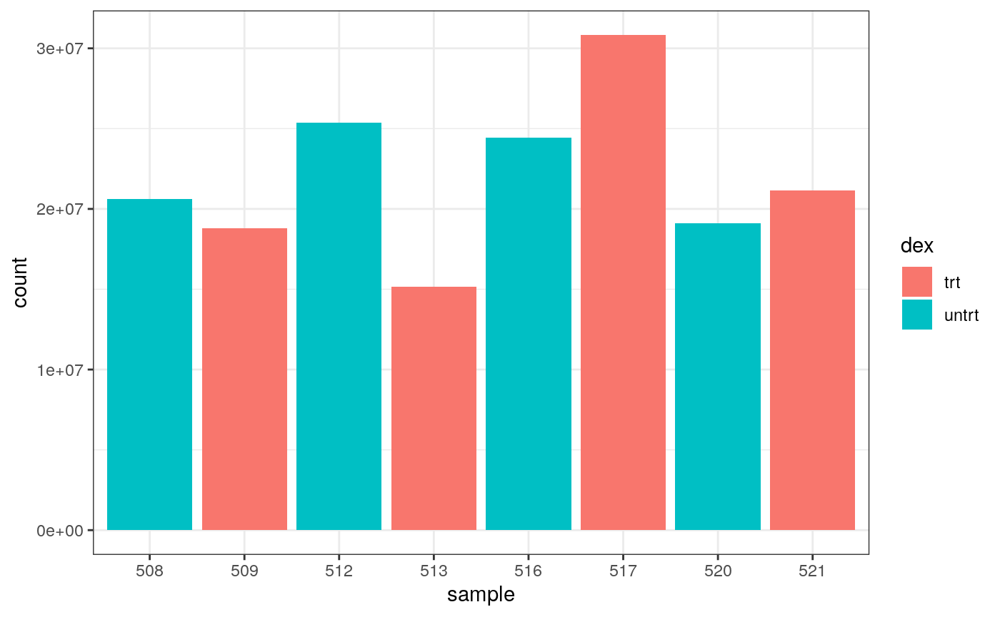
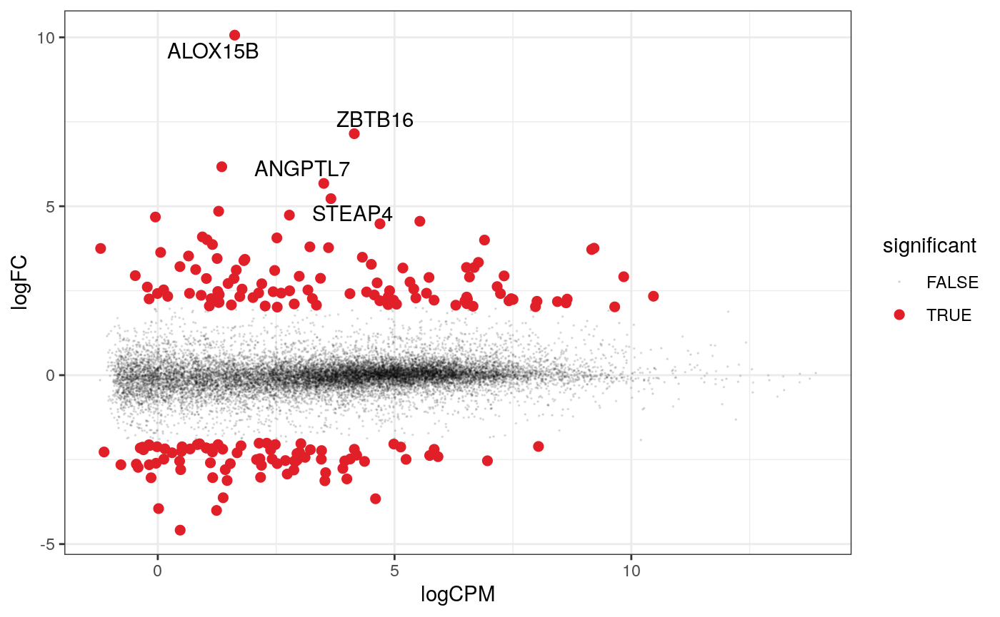

Producing extensive transcriptomic analysis workflows with tidy principles - 1 hour
Maria Doyle, Peter MacCallum Cancer Centre1
Stefano Mangiola, Walter and Eliza Hall Institute2
Source:vignettes/workshop_1_hour.Rmd
workshop_1_hour.RmdIntroduction
…
# load libraries library(tibble) library(dplyr) library(tidyr) library(readr) library(stringr) library(ggplot2) library(tidyHeatmap) library(tidybulk) library(ggrepel) library(airway)
Gate + gene enrichment
cell_type_mu_sigma %>% filter(ancestor=="t_CD8") %>% pivot_wider(names_from = .which, values_from = c(.sd)) %>% tidygate::gate( .element = symbol, .dim1 = sigma_mu , .dim2 = sigma_sigma, .size=0.01, opacity = 0.1 ) %>% symbol_to_entrez(.transcript = symbol, .sample = ancestor) %>% test_gene_overrepresentation(ancestor, entrez, .do_test = gate==1, species = "Homo sapiens")
How to start from tables
# create some example tables to use data(airway) # counts table counts <- assay(airway) %>% as_tibble(rownames = "geneID") # sample information table sampleinfo <- colData(airway) %>% as_tibble(rownames = "sample") # data preprocessing counts_tt <- # convert to tidy format pivot_longer(counts, cols = starts_with("SRR"), names_to = "sample", values_to = "counts") %>% # get gene symbols ensembl_to_symbol(geneID) %>% # order the columns for tidybulk select(sample, geneID, counts, transcript) %>% # add the sample info left_join(sampleinfo) %>% # shorten sample name mutate(sample=str_remove(sample, "SRR1039")) %>% # convert to tidybulk object tidybulk(.sample=sample, .transcript=geneID, .abundance=counts) #> Joining, by = "sample"
How to count reads per sample
counts_tt %>% group_by(sample) %>% summarise(total_reads=sum(counts)) #> # A tibble: 8 x 2 #> sample total_reads #> <chr> <int> #> 1 508 20637971 #> 2 509 18809481 #> 3 512 25348649 #> 4 513 15163415 #> 5 516 24448408 #> 6 517 30818215 #> 7 520 19126151 #> 8 521 21164133
We can also check how many counts we have for each sample by making a bar plot. This helps us see whether there are any major discrepancies between the samples more easily.

As we are using ggplot2, we can also easily view by any other variable that’s a column in our dataset, such as cell line, simply by changing fill.
We can colour by dex treatment.
 We can colour by cell line.

How to examine normalised counts with boxplots
# scale counts counts_scaled <- counts_tt %>% scale_abundance(factor_of_interest = dex) # create box plots counts_scaled %>% filter(!lowly_abundant) %>% pivot_longer(cols = c("counts", "counts_scaled"), names_to = "source", values_to = "abundance") %>% ggplot(aes(x=sample, y=abundance + 1, fill=dex)) + geom_boxplot() + geom_hline(aes(yintercept = median(abundance + 1)), colour="red") + facet_wrap(~source) + scale_y_log10() + theme_bw()

How to create MDS plot
airway %>% tidybulk() %>% scale_abundance(factor_of_interest=dex) %>% reduce_dimensions(method="MDS", scale = F) %>% pivot_sample() %>% ggplot(aes(Dim1, Dim2, color = dex)) + geom_point() #> tidybulk says: to access the raw results do `attr(..., "internals")$MDS`

How to create MA plot
MA plots enable us to visualise amount of expression (logCPM) versus logFC. Highly expressed genes are towards the right of the plot. We can also colour significant genes (e.g. genes with FDR < 0.05)
# perform differential testing counts_de <- counts_tt %>% test_differential_abundance( .formula = ~ 0 + dex + cell, .contrasts = c("dextrt - dexuntrt"), omit_contrast_in_colnames = TRUE ) #> tidybulk says: The design column names are "dextrt, dexuntrt, cellN061011, cellN080611, cellN61311" #> tidybulk says: to access the raw results (fitted GLM) do `attr(..., "internals")$edgeR` # maplot, minimal counts_de %>% pivot_transcript() %>% filter(!lowly_abundant) %>% ggplot(aes(x=logCPM, y=-logFC, colour=significant)) + geom_point()+ theme_bw()

A more informative MA plot, integrating some of the packages in tidyverse.
counts_de %>% pivot_transcript() %>% # Subset data filter(!lowly_abundant) %>% mutate(significant = FDR<0.05 & abs(logFC) >=2) %>% mutate(transcript = ifelse(abs(logFC) >=5, as.character(transcript), "")) %>% # Plot ggplot(aes(x = logCPM, y = logFC, label=transcript)) + geom_point(aes(color = significant, size = significant, alpha=significant)) + geom_text_repel() + scale_color_manual(values=c("black", "#e11f28")) + scale_size_discrete(range = c(0, 2)) + theme_bw()

How to perform gene set analysis
library(clusterProfiler) library(org.Hs.eg.db) # extract all genes tested for DE res <- counts_de_pretty %>% pivot_transcript() %>% filter(!lowly_abundant) # GO terms egoCC <- res %>% filter(FDR < 0.1 & logFC > 0 ) %>% pull( "transcript" ) %>% enrichGO( OrgDb = org.Hs.eg.db, keyType = 'SYMBOL', ont = "BP", universe = (res %>% pull( "transcript" ) ) ) dotplot(egoCC) goplot(egoCC) emapplot(egoCC) # MSigDB Hallmark gmtH <- read.gmt( "https://data.broadinstitute.org/gsea-msigdb/msigdb/release/6.2/h.all.v6.2.symbols.gmt" ) enrH <- enricher( gene = ( res %>% filter(FDR < 0.1 & logFC > 0) %>% pull( "transcript" ) ), TERM2GENE = gmtH, universe = ( res %>% pull( "transcript" ) ) ) dotplot( enrH ) emapplot(enrH)
Contributing
If you want to suggest improvements for this workshop or ask questions, you can do so as described here.
Reproducibility
Record package and version information with sessionInfo
sessionInfo() #> R version 4.0.2 Patched (2020-08-06 r78974) #> Platform: x86_64-pc-linux-gnu (64-bit) #> Running under: Ubuntu 20.04 LTS #> #> Matrix products: default #> BLAS/LAPACK: /usr/lib/x86_64-linux-gnu/openblas-openmp/libopenblasp-r0.3.8.so #> #> locale: #> [1] LC_CTYPE=en_US.UTF-8 LC_NUMERIC=C #> [3] LC_TIME=en_US.UTF-8 LC_COLLATE=en_US.UTF-8 #> [5] LC_MONETARY=en_US.UTF-8 LC_MESSAGES=C #> [7] LC_PAPER=en_US.UTF-8 LC_NAME=C #> [9] LC_ADDRESS=C LC_TELEPHONE=C #> [11] LC_MEASUREMENT=en_US.UTF-8 LC_IDENTIFICATION=C #> #> attached base packages: #> [1] parallel stats4 stats graphics grDevices utils datasets #> [8] methods base #> #> other attached packages: #> [1] airway_1.9.0 SummarizedExperiment_1.19.6 #> [3] DelayedArray_0.15.7 matrixStats_0.56.0 #> [5] Matrix_1.2-18 Biobase_2.49.0 #> [7] GenomicRanges_1.41.5 GenomeInfoDb_1.25.10 #> [9] IRanges_2.23.10 S4Vectors_0.27.12 #> [11] BiocGenerics_0.35.4 ggrepel_0.8.2 #> [13] tidybulk_1.1.5 tidyHeatmap_1.1.4 #> [15] ggplot2_3.3.2 stringr_1.4.0 #> [17] readr_1.3.1 tidyr_1.1.1 #> [19] dplyr_1.0.1 tibble_3.0.3 #> #> loaded via a namespace (and not attached): #> [1] viridis_0.5.1 edgeR_3.31.4 splines_4.0.2 #> [4] viridisLite_0.3.0 assertthat_0.2.1 GenomeInfoDbData_1.2.3 #> [7] yaml_2.2.1 pillar_1.4.6 backports_1.1.8 #> [10] lattice_0.20-41 limma_3.45.10 glue_1.4.1 #> [13] digest_0.6.25 RColorBrewer_1.1-2 XVector_0.29.3 #> [16] colorspace_1.4-1 htmltools_0.5.0 preprocessCore_1.51.0 #> [19] pkgconfig_2.0.3 GetoptLong_1.0.2 zlibbioc_1.35.0 #> [22] purrr_0.3.4 scales_1.1.1 farver_2.0.3 #> [25] generics_0.0.2 ellipsis_0.3.1 withr_2.2.0 #> [28] cli_2.0.2 magrittr_1.5 crayon_1.3.4 #> [31] memoise_1.1.0 evaluate_0.14 fs_1.5.0 #> [34] fansi_0.4.1 MASS_7.3-51.6 tools_4.0.2 #> [37] hms_0.5.3 GlobalOptions_0.1.2 lifecycle_0.2.0 #> [40] ComplexHeatmap_2.5.4 locfit_1.5-9.4 munsell_0.5.0 #> [43] cluster_2.1.0 compiler_4.0.2 pkgdown_1.5.1 #> [46] rlang_0.4.7 grid_4.0.2 RCurl_1.98-1.2 #> [49] rjson_0.2.20 circlize_0.4.10 labeling_0.3 #> [52] bitops_1.0-6 rmarkdown_2.3 gtable_0.3.0 #> [55] R6_2.4.1 gridExtra_2.3 knitr_1.29 #> [58] utf8_1.1.4 clue_0.3-57 rprojroot_1.3-2 #> [61] shape_1.4.4 desc_1.2.0 stringi_1.4.6 #> [64] Rcpp_1.0.5 vctrs_0.3.2 png_0.1-7 #> [67] tidyselect_1.1.0 xfun_0.16